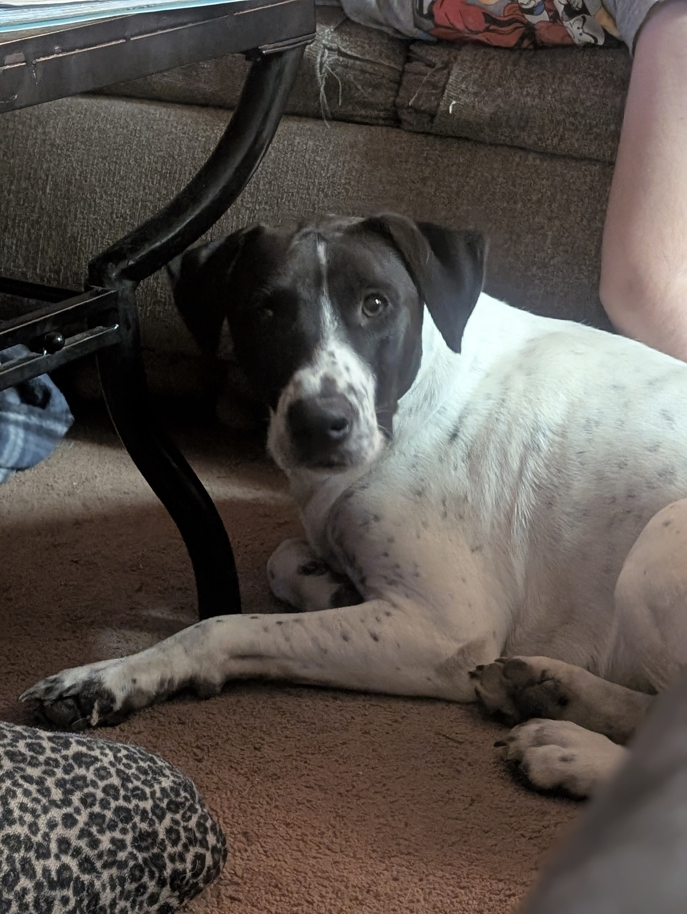

Summer Expectations
Posted on June 12, 2025
Alright, fellow travelers on this cosmic journey, settle in and let's talk about the wild, wonderful, and sometimes wonderfully weird world of homesteading. If you're picturing us skipping through fields of lavender, strumming acoustic guitars, and living a perfectly Instagrammable existence, well, you're not entirely wrong... sometimes. But mostly, it's a beautiful, chaotic dance with nature, where every day brings a new adventure. And let me tell you, the love and giggles from the grandkids? That's the real superglue holding this whole operation together, like a cosmic duct tape of pure joy. Without their smiles, I'd probably be found mumbling to the chickens about the meaning of life, which, let's be honest, they've probably figured out already.
So, what's buzzin' at Bent Cypress these days? We're diving deep into the fascinating (and occasionally frustrating) world of pheasants! Yep, a whole new flock of feathered friends, and it's a totally fresh trip. Think of it as our latest meditation practice, but with more clucking and less "Ohm." We're also on a quest for the ultimate sustainable chill, exploring all sorts of groovy options for water, food, and electricity. It's like a grand puzzle, man, trying to figure out how to keep this little slice of heaven humming along with good vibes and minimal impact.
Now, don't go thinking it's all just serious business around here. We're also cultivating a space where curiosity blossoms like wildflowers after a good rain. We want this to be a groovy, educational playground for our kids, our friends, and anyone who stumbles upon our little corner of the internet. That means you might find us waxing poetic about the finer points of pheasant talk, or perhaps we'll drop some wisdom on cage-building instructions that'll make your inner architect do a happy dance. And if we stumble upon a product that truly blows our socks off, you can bet we'll share the good word in a product review!
But hey, if you're really lucky, you might just catch me mid-rant about those furry little fiends, the trash pandas. It's an ongoing saga, a battle of wits and willpower, and while I may be outnumbered, the fight for our compost pile must go on! The point is, here at Bent Cypress, there's always something fresh on the breeze, something new to explore. So, don't be a stranger! Reach out on Facebook – more ways to connect are on the horizon. For now, stay tuned, watch these beautiful birds grow, and witness them become the shining jewel of our homestead. It's gonna be a trip!